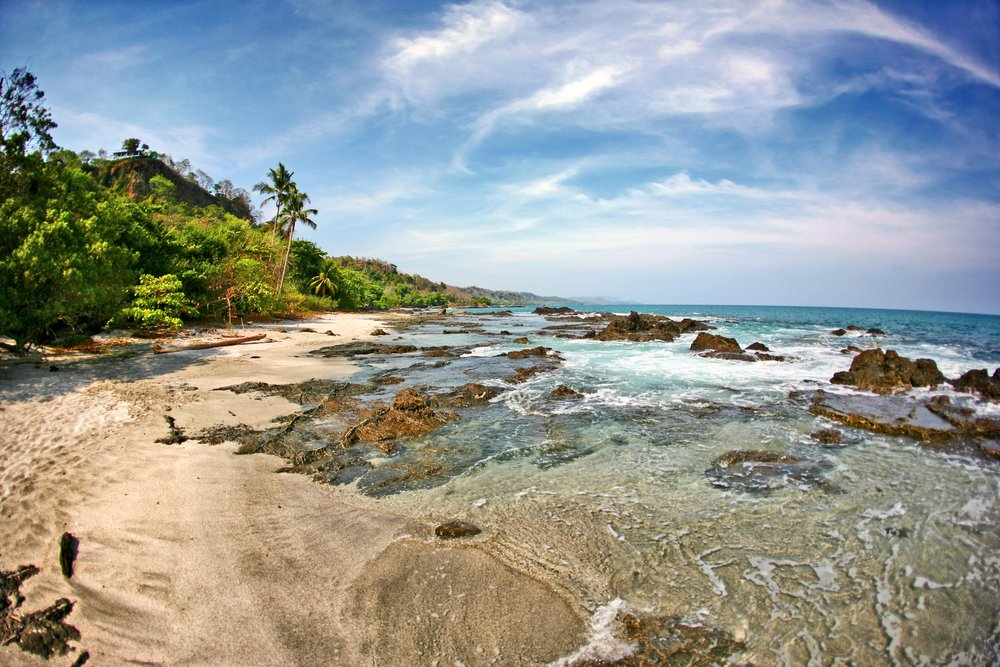

On foot
Playa Flamingo
The home beach: a protected white-sand crescent with water calm enough for every age, and the sunsets the coast is named for.

Guanacaste · Costa Rica
Costa Rica’s Gold Coast
A calm, white-sand crescent on the Pacific — and every distance on this page is measured from the villa’s front door.
The setting
Nestled on the coveted Gold Coast of Guanacaste, Playa Flamingo is renowned for its pristine white-sand beach, crystal-clear waters and world-class sunsets. Casa Nina sits just steps from the shore, with everything you need within reach.
Sixty minutes from Liberia International (LIR), roughly five hours from San José, and within easy day-trip distance of Rincón de la Vieja volcano, the Palo Verde wetlands and the region’s best-known waterfalls. The Guanacaste dry season, December to April, brings reliable sunshine and the coast’s signature long, golden afternoons.
Six beaches · drag or swipe
The home beach: a protected white-sand crescent with water calm enough for every age, and the sunsets the coast is named for.

A long, quiet stretch around the bay with gentle water and low-key beach bars. The locals’ evening walk.

The working beach town next door — fishing boats on the sand, a sleepy plaza, and dinner with your feet in the sand.

Sand made of crushed shells and the clearest turquoise water in the region. Bring the snorkels.

A small, sheltered cove past Potrero that rarely draws a crowd. Shallow, still, and made for little ones.

A wilder, protected shore inside Las Baulas National Park — surf by day, and leatherback turtles nesting on guided night walks, October to March.

Board at Flamingo or Potrero for an afternoon down the coast — a snorkel stop, an open bar, and the sun dropping behind the Catalinas. The one everyone remembers.

Half- and full-day charters run for sailfish, marlin, roosterfish, tuna and mahi from a coast with a serious billfish reputation.

Volcanic islets with some of the Pacific’s best diving and snorkeling. Giant mantas cruise through November to April; white-tip sharks, rays and turtles hold the fort year-round.

The forgiving breaks at Tamarindo and Playa Grande built Costa Rica’s surf reputation. Lessons run daily, boards included, all levels welcome.

Flamingo and Potrero bays sit glassy until midday — easy paddling for mixed ages, with gear delivered straight to the beach.

Coastal canopy runs crowned by a dual zipline over the ocean — one of the longest in the country — with a sloth sanctuary and botanical garden waiting below.

Guided rides along the sand at low tide or up into the dry-forest hills, paced for confident riders and first-timers alike.

Quads and side-by-sides on ridge tracks and back roads, with lookouts over the whole bay along the way.

A Robert Trent Jones II course threaded through the dry forest above Conchal beach. Clubs and tee times arranged.

Massages, facials and full spa days set up poolside or on the beach. The therapists come to you.

An active volcano ringed by fumaroles, waterfalls and hanging bridges. Pair the national park with thermal hot springs and mineral mud baths at Vandara for the complete day.

A slow boat on the Tempisque through one of Central America’s great wetlands — monkeys and crocodiles on the banks, and more than 280 bird species overhead.

A wide curtain waterfall with a sandy pool you can swim in — the easiest add-on to any inland day, and a favourite with kids.
Reliable sun, Papagayo breezes and the coast at its social peak. These months book first — for the villa and for the boats.
Giant Pacific mantas gather at the Catalina Islands, with sightings peaking January to March. Never guaranteed — always unforgettable.
The largest sea turtles on earth nest inside Las Baulas National Park, thirty-five minutes away. Night viewings are guided-only, and worth planning around.
The province’s folklore capital, a short drive inland, fills with marimba, traditional dance and tope horse parades for a week each January.
The province celebrates its 1824 annexation with street fiestas, horse parades and traditional food — liveliest in Liberia and Santa Cruz.
Southern-hemisphere humpbacks pass offshore, with a northern population following December to April — spotted from catamarans and dive boats, never promised.
Afternoon rain turns the province green, the waterfalls run full and the beaches go quiet. The best-value months, and a local favourite.
Good to know
Liberia International (LIR) is about an hour away — and every Casa Nina booking includes airport pick-up and drop-off.
Not necessarily. Golf carts are street-legal on all local roads, and the concierge arranges cart or car rentals — from 5-seaters to 16-passenger vans.
December to April for guaranteed sun and the full social season. May to November for green hills, full waterfalls, quieter beaches and better value.
Karina and the concierge team, included with every stay. Charters, chefs, drivers and guides are arranged before you land.
The Casa Nina concierge
Every stay includes a dedicated concierge. Tell Karina what the group wants to do, and the boats, chefs, drivers and guides are booked before you land.
Everyone · Together · Comfortably